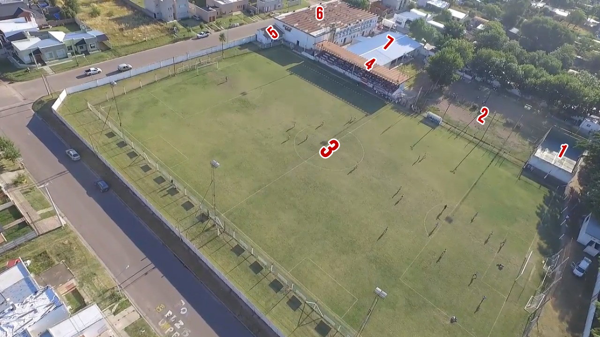

Estadio
El predio deportivo del Club se encuentra ubicado, desde 1924, en la manzana delimitada por las calles Sarmiento,Lugones, Mitre y Carmen Sixta Isola. Desde el 13 de abril de 2013 (fecha del centenario del Club), el Estadio lleva el nombre de "César Ménendez", en honor a quien es uno de los hinchas mas longevos del club, con más de 60 años en las tribunas. A su vez, el gimnasio (cuya entrada se sitúa en la esquina de Sarmiento y Carmen Sixta Isola), lleva el nombre de un ex presidente de la institución, Roberto A. Verna, que presidió la institución durante más de 10 años. Las instalaciones del predio deportivo cuentan con: una cancha de paddle (1), una cancha de fútbol 5 (2), la cancha principal (3) con su distintiva tribuna techada (4), un quincho (5), y el gimnasio (6). Además, desde el año 2014, se está construyendo una pileta de natación climatizada (7), ya que el proyecto fue uno de los ganadores del Presupuesto Participativo de la Municipalidad de Rivadavia en el año 2014.

Foto aérea capturada por Nahuel Perdominici desde un drone. Pulse aquí para ver el video de la captura.
Atlético cuenta también con una cancha de entrenamiento auxiliar, conocida popularmente como "La cancha de Verna", ubicada a 2 cuadras del predio principal, en la manzana delimitada por las calles Verna, San Martín, Av. Rivadavia y Elías Olivares. En dicha cancha se realizan habitualmente los entrenamientos de todas las categorías de fútbol, además del hockey, que también usa esa cancha para disputar sus partidos oficiales.